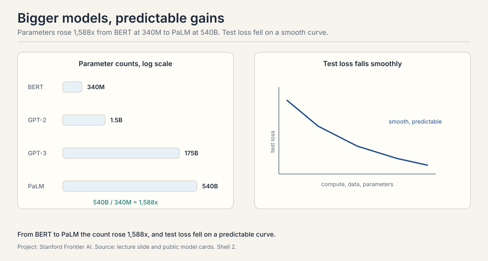
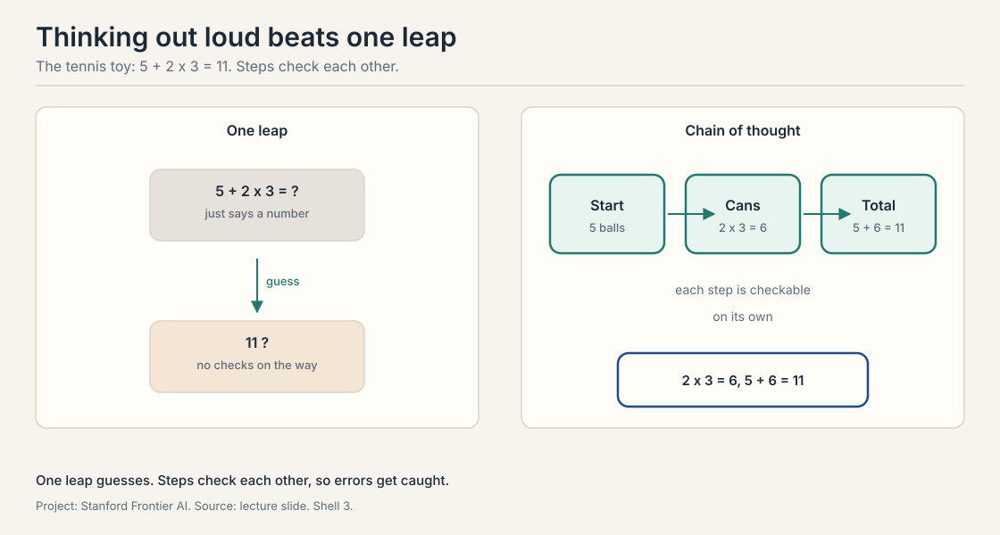
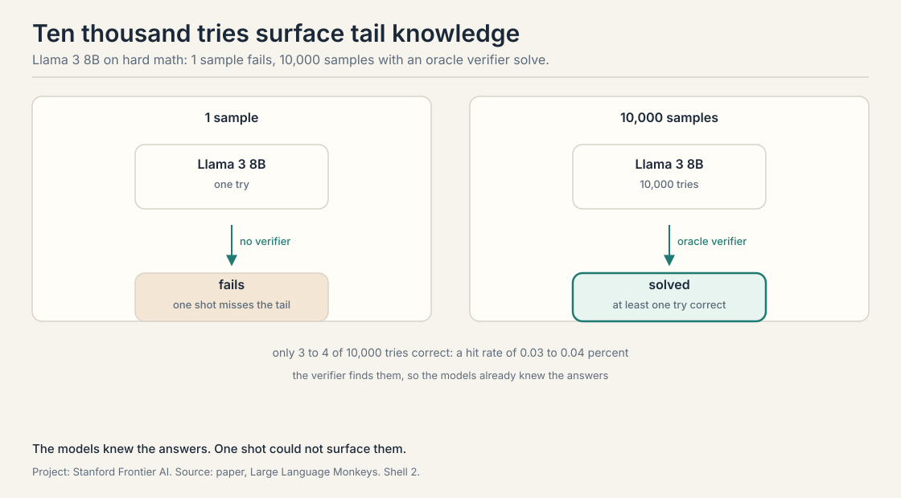
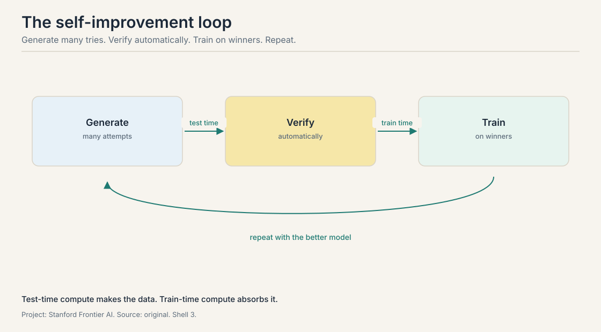
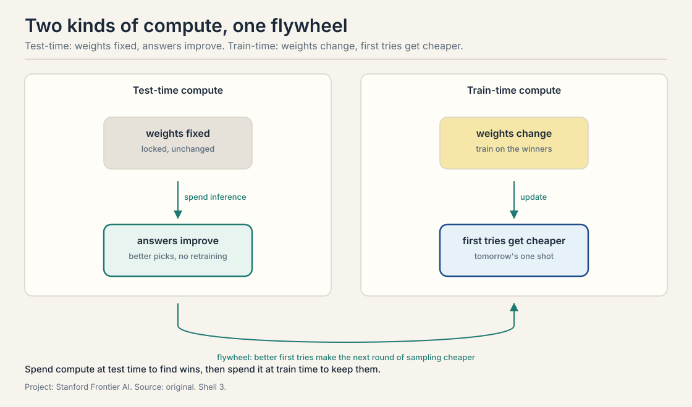

Lecture 1: The Self-Improving Agent
Video blocked (ad-blocker or local file mode).
Watch on YouTubeVideo not loading? Watch on YouTube
Mirhoseini and Chowdhery introduce the course. Scaling recap, few-shot learning, chain of thought as emergent behavior, instruction tuning and RLHF, Large Language Monkeys, reasoning models, and the shift from chatbots to agents.
The gap this course closes
Builds on: This is the course’s opening: it states the loop, generate, verify, train, that every later lecture builds on.
You ask a chatbot a hard math question. It answers in one try. The answer is wrong. You ask again, phrased a little differently. This time it is right. The model knew the answer all along. It just did not say it the first time.
A language model is a machine that predicts the next word, over and over, until a full answer appears. An agent is a language model that does more than answer: it is given a goal, it plans steps, it takes actions in an environment, it reads the feedback, and it corrects its steps until the goal is done or it admits it cannot finish. Fixing a bug, planning a trip, proving a theorem: these are agent tasks. None of them fits in one shot.
This course studies whether agents can improve themselves. The loop is simple to state: generate many attempts, check them with a verifier, train on the winners, repeat. Each lecture adds one piece of that loop and names its price. This chapter opens the loop and names its parts.
Scaling laws: make it bigger
Builds on: the course’s opening loop, generate many attempts, verify them, train on the winners, which needs capable base models to start from.
From 2018 to about 2024 the field had one reliable recipe: make the model bigger. The scaling laws say that as you raise compute, data, and parameter count, the test loss falls on a predictable curve. Three axes, three curves: more compute on the x-axis means lower loss on the y-axis. More data means lower loss. More parameters means lower loss. A parameter is one adjustable number inside the model. Test loss measures how badly the model predicts text it has never seen. Lower is better.
The parameter counts tell the story. BERT had 340 million parameters. GPT-2 had 1.5 billion. GPT-3 had 175 billion. PaLM had 540 billion. GPT-4 is estimated at trillions. From BERT to PaLM the count rose about 1,588 times. Each step brought better scores on language and reasoning benchmarks.

Bigger models did three things that smaller ones could not. First, they kept improving on benchmarks as they grew.
Few-shot learning: examples in the prompt
Builds on: scaling laws, which produced models large enough to follow patterns from examples with no retraining.
Second, bigger models learned few-shot learning: show the model a few examples of a task inside the prompt and it follows the pattern, with no extra training. Add a few English-to-French pairs first and it is few-shot learning. GPT-3 made this work across many tasks, which made prototyping fast: no fine-tuning, just examples in the prompt.
Zero-shot learning: the task with no examples
Builds on: few-shot learning, the easier version where the prompt provides the pattern to follow.
Zero-shot learning is the harder version: describe the task with no examples and the model still performs it. The lecture uses translation. The prompt says “translate English to French” and then asks for the French word for “cheese”. A model that answers without ever being trained on translation pairs is doing zero-shot learning.
Emergence: abilities that appear at scale
Builds on: few-shot and zero-shot learning, two abilities scaling unlocked that nobody trained for directly.
Third, bigger models showed emergent behavior (emergence): abilities that appear suddenly past a size threshold and were never explicitly trained. The most important one is chain of thought.
Thinking out loud: chain of thought
Builds on: Emergence, the scale-unlocked ability that chain of thought exemplifies.
Chain of thought means the model writes out intermediate reasoning steps before giving the final answer, instead of leaping straight to it. The lecture walks through the toy that made this famous. The question: Roger has five tennis balls. He buys two more cans of tennis balls. Each can has three tennis balls. How many tennis balls does he have now?
A one-shot answer just says a number. A chain-of-thought trace says: Roger started with 5. Two cans of 3 is 6. Five plus 6 is 11. Each step is checkable on its own. The arithmetic: 2 times 3 is 6, and 5 plus 6 is 11.

Chain of thought was not designed in. It was discovered. Small models cannot use it. The lecture shows three model families, LaMDA, GPT, and PaLM: at around 8 billion parameters the trace does nothing, and past that threshold the same trace lifts math scores. The current reading, stated as an open question in the lecture, is that using a trace takes capacity: the model must both reason and monitor its reasoning, and small models spend everything writing the steps with nothing left to check them.
Instruction tuning: teaching the model to follow requests
Builds on: emergence, which showed that scale alone produces raw capabilities that still need shaping into useful behavior.
ChatGPT launched in November 2022 and reached 1 million users in 5 days. Two training steps beyond raw scaling made that leap. Both are forms of fine-tuning: continued training of an already trained model on new data.
First, instruction tuning. The base model only predicts the next word. Instruction tuning shows it pairs of instructions and answers, including chain-of-thought traces, so it learns to follow requests and walk through a process. The data mixes human-written pairs, templates, and synthetic data. Quality and generality of this data strongly shape the final model.
RLHF: steering with human feedback
Builds on: instruction tuning, which teaches the model to follow requests but not which answers humans prefer.
Second, RLHF, reinforcement learning from human feedback. The recipe: collect human ratings of model answers, train a reward model to predict those ratings, then use reinforcement learning to steer the language model toward answers the reward model scores highly. The reward model can score correctness, helpfulness, specificity, or harmlessness, weighted by what the builders care about. A close variant is RLAIF, reinforcement learning from AI feedback, where a model instead of a human writes the ratings. The lecture flags this as the direction the course will push: the human is the bottleneck, so feedback itself must be automated.
The new frontier: inference
Builds on: The scaling wall and the monkeys teaser: with pretraining saturated, inference becomes the new axis.
Model development has three stages. Pre-training takes months on thousands of graphics processing units (GPUs) over trillions of tokens. Fine-tuning uses orders of magnitude less data. Inference is using the model: words in, words out. For years almost no compute went into making inference smarter. That changed about a year and a half before this lecture. Inference is now a frontier: ways to make the model better at use time without changing a single weight.
The lab’s own result opens the argument. It is called Large Language Monkeys, after the infinite monkey theorem: a monkey typing forever will eventually produce Shakespeare. Here the language model is the monkey. Ask it the same hard problem not once but 10,000 times, with a verifier, a checker that picks the correct responses, selecting the winners. Coverage is the fraction of problems solved by at least one sample.
The result: Llama 3 8B and 7B models, worse than GPT-4o at one sample, beat GPT-4o once sampling scales up. On some hard problems only 3 or 4 of the 10,000 samples were correct, a hit rate of 0.03 to 0.04 percent, yet the verifier found them. The models already knew the answers. One shot could not surface them.

Two practical notes from the lecture. Sampling runs in parallel, so latency grows less than the sample count suggests, but the cost trade-off is real and varies by problem. And temperature, the knob controlling output randomness, cannot be pushed far: past about 1.2 the outputs turn to gibberish. Diversity has a ceiling.
Reasoning models: test-time scaling goes mainstream
Builds on: The inference frontier and the monkeys result, productized as OpenAI’s o1.
OpenAI’s o1, released September 2024, productized the same idea. Its accuracy on hard math climbs log-linearly with test-time compute: more thinking tokens, higher pass-at-one accuracy, with no change to the weights. Pass at one means the single first answer is correct. Pass at k means at least one of k samples is correct.
The lecture walks through how a reasoning model attacks a task, using a bash-script transpose problem as the running example. The model does problem analysis first: what are the input and output formats. Then task decomposition: parse the input, build the matrix, transpose it, print it. Then self-correction: it starts a formula, stops, says the formula is wrong, and fixes it. Then alternative proposals: if one approach stalls, it backtracks and tries another. These behaviors were partly seeded by human-curated training data and partly acquired during the fine-tuning and reinforcement learning that made the model a reasoner. They generalize beyond the training tasks.
One honest caveat from the Q&A: reasoning models like their own traces more than traces from other models, even better ones. And a larger model is still the better reasoner. A common pattern is a large model that thinks and a smaller model that summarizes.
From chatbot to agent
Builds on: Reasoning models, which think but still do not accomplish tasks.
Chatbots and reasoning models are still single-turn in spirit. They do not accomplish tasks. The shift the course tracks is from chatbot to agent, and it is already visible in products. Claude Code and Codex, OpenAI’s coding agent, take English instructions and edit files, run tests, and iterate. Deep Research takes a research question, reads many websites, and returns a report with pros and cons.
The transition has a precise shape. The model is given a goal. It plans steps toward the goal. It interacts with an environment through tools. It reads the feedback. It corrects its steps. It stops when the goal is done or admits failure. Goal, plan, act, observe, correct, stop: that loop is what separates an agent from a chatbot. Memory enters because a multi-step task needs state: what was tried, what worked, what remains.
In practice most deployed systems are agentic workflows, not open-ended agents. The lecture names the building blocks. Prompt chaining splits a task into subtasks run in sequence. Routing sends easy inputs down a simple path and hard inputs down a complex one. Parallelization runs independent subtasks at once and aggregates, which is the shape of Deep Research. An orchestrator is a central model that plans and dispatches to worker models, the shape of Claude Code. An evaluator or judge is a model that scores a proposed solution. A verifier checks correctness for real, such as running unit tests on generated code. Tool calls reach the outside world: web search, a weather lookup, a terminal.
The generator-verifier gap
Builds on: The agent loop, whose load-bearing wall is the verifier.
One concept from the Q&A deserves its own name because the whole course turns on it. The generator-verifier gap is the distance between generating good outputs and knowing which outputs are good. Models generate plenty of sensible attempts. Selecting the right one needs feedback, and in creative domains human feedback is the bottleneck. Where feedback is cheap and trustworthy, math and code with tests, the loop can run on its own. Where it is slow or subjective, the loop stalls. Reliable verification gets its own lecture later in the quarter.
Where this already works
Builds on: Agentic workflows and the generator-verifier gap, applied to shipping products.
Three application areas from the lecture, in increasing order of ambition. Coding agents handle repetitive software work: code migrations, version upgrades, restructuring, unit test generation. They mirror what a developer does, navigate the repo, edit, run the terminal, read the output, fix, and the loop is getting reliable now after being shaky a year earlier.
Customer support is the second. Live transcription of calls. Knowledge assist: the agent consults the help database and surfaces the right article instead of making the human memorize everything. Smart replies in chat. Call summaries afterward.
Deep research is the third. Give it a literature review and it finds references, judges relevance, outlines, summarizes each source, and synthesizes a full article, reading more papers than a human would. The lecture’s example: the 2022 Winter Olympics opening ceremony. The forward-looking version is the AI scientist: the model brainstorms ideas, helps iterate on experiments, and improves the paper write-up. Hallucination is real, but as a brainstorming partner the model proposes ideas outside any one researcher’s reading.
The loop, stated once
Builds on: Every piece introduced in this lesson, consolidated into one flywheel.

Generate many attempts at test time. Verify them automatically. Train on the winners at train time. Repeat with the better model. Test-time compute improves answers with weights fixed. Train-time compute changes the weights so the next first try is better.

Used where, as of October 2026
- Claude Code (Anthropic, launched February 2025): the coding agent the lecture holds up as the product proof. By 2026 it is woven into daily engineering work: Anthropic’s Boris Cherny reported about 80 percent of Anthropic’s technical staff use it daily (Lenny’s Podcast, July 2026), and SemiAnalysis estimated 4 percent of public GitHub commits were Claude Code-authored (February 2026). The lecture’s loop, navigate, edit, run, read output, fix, is its visible behavior.
- OpenAI Codex: OpenAI’s coding agent (cloud research preview, May 2025). It runs many coding tasks in parallel in isolated cloud sandboxes, launched on codex-1, a version of o3 tuned for software engineering. By March 2026 it had over 2 million weekly active users (Wikipedia, October 2026). The lecture’s loop, navigate, edit, run, read output, fix, is its visible behavior.
- Deep Research (OpenAI, February 2025), Gemini Deep Research, Perplexity: the deep research products the lecture anticipated. They run the parallel research-and-aggregate workflow at production scale.
- DeepSeek-R1 (January 2025): the open reasoning model that made test-time scaling plus reinforcement learning the public recipe. Its training used GRPO, the algorithm Lecture 6 covers.
- o1/o3, Gemini thinking models: o1 shipped in full on December 5, 2024, o3 launched April 16, 2025, and Google’s Gemini 2.0 Flash Thinking Experimental arrived December 19, 2024 (Wikipedia, October 2026, TechCrunch, December 2024). All are reasoning models in production, built on the test-time compute axis this lecture introduces.
- KernelBench (Stanford, ICML 2025): the live version of the lecture’s “AI as a compiler” idea, a benchmark where models write Compute Unified Device Architecture (CUDA) kernels checked by running them. Active as of 2026, with a verified variant from Meta.
Take 10,000 math problems with known answers. Generate: the model attempts each 100 times, producing 1,000,000 attempts. Verify: the answer key keeps the attempts that reach correct answers. Suppose 300,000 survive. Train: fine-tune the model on those 300,000 winning attempts. The model’s single-attempt accuracy rises. Next turn, the better model needs fewer attempts per problem to produce the same number of winners. That is the flywheel. The training data. A verifier that approves wrong answers fills the winner set with bad attempts, and fine-tuning bakes them into the weights. The loop amplifies the verifier’s errors, not just its judgments. That is why the course treats the verifier as the load-bearing wall.
Test-time compute spends computation when answering: more samples, longer reasoning chains, tool calls. The weights never change. Train-time compute spends computation updating the weights: fine-tuning on verified winners. Test-time buys better answers now. Train-time buys cheaper better answers later. Test-time scaling generates the training data that train-time scaling consumes. Without test-time attempts there is nothing to verify and learn from. Without training, every hard problem pays the full sampling cost forever.
Three mechanisms. Decomposition: one hard leap becomes several easy steps, each inside the model’s reliable range. Working memory: the trace is scratch space, so intermediate results sit in context where later steps can read them. Checkability: a wrong step is visible, so the model or a verifier can catch it without redoing everything. In the toy, “2 cans of 3 is 6” can be checked on its own. The cost is tokens: chain of thought spends more of them to buy reliability. The lecture reports it as an empirical threshold near 8 billion parameters, with no settled mechanism. The plausible reading: using a trace requires enough capacity to both reason and monitor the reasoning. Small models spend their capacity writing the steps and have none left to check them.
The loop optimizes whatever the verifier measures. If the verifier is a learned model, the generator can learn to produce outputs that score high without being good: fluent nonsense that fools the judge. The scores climb. The actual quality does not. The lecture names this as the reason verifiers must be honest, not just fast: a gameable judge turns self-improvement into self-deception. Hold out a trusted check the loop cannot see: human spot-checks, or a separate verifier trained differently. If the loop’s scores rise but the held-out check flatlines or falls, the loop is hacking its judge. No held-out check, no detection.
Generate: sample 20 candidate answers per ticket. Verify: this is the hard part. Candidate verifiers: a model judge checking the answer against the retrieved help articles, a strict citation check where every factual claim must match a quoted span, and customer thumbs-up or down as a slow signal. Train: fine-tune on answers that pass the citation check and get positive ratings. The honest answer names the weak link: the judge can be gamed and the thumbs-up signal is slow and sparse. The loop works only as far as the citation check is airtight. If the verifier is “customer did not complain”, the model learns to write answers that suppress complaints: over-apologizing, deflecting, burying the hard answer. The metric improves. Support quality does not. The fix is a verifier tied to resolution, not sentiment.
A workflow is a hand-designed graph of model calls, verifiers, and tools: prompt chaining, routing, parallel calls with aggregation, an orchestrator dispatching workers. It is not an open-ended agent because the loop is fixed by the designer. The model does not decide the structure. The lecture’s claim: most deployed systems today are workflows, with coding and research showing the first signs of genuinely open-ended loops. The model itself must own the loop: decide the next step from observations, recover from errors, and know when to stop. That needs planning, multi-step reasoning, and self-correction, the topics of the coming lectures.
The lecture frames it as saturation: the predictable gains from more parameters, data, and compute were flattening, and the cost of each further step was enormous. The response was a new axis, inference, plus closing the loop back into training. Note the framing is the lecturers’, not a measured constant. No. Later lectures show that for the hardest problems, bigger pretrained models still win even against large test-time budgets. The wall changed where the marginal dollar goes, not the value of pretraining itself.
Recap: the whole lesson on one screen
- One shot wastes knowledge. A model can know an answer it will not give on the first try. Agent tasks never fit in one shot.
- Scaling, then a wall. Parameters rose 1,588x from BERT to PaLM with predictable gains, then saturated around 2024.
- Thinking out loud. Chain of thought breaks one hard leap into checkable steps. Roger: 5 + 2 x 3 = 11. Only large models can use it.
- The monkeys result. Sampled 10,000 times with a verifier, a small 8B model beats GPT-4o. Only 3 to 4 of 10,000 tries were correct. The knowledge is in the weights.
- The loop. Generate many tries, verify automatically, train on winners, repeat. Test-time compute makes data. Train-time compute absorbs it.
- The honest price. The verifier is the bottleneck. Slow or subjective domains stay outside the loop.
Official sources and further reading
Official: - CS329A Part 1: Course Overview (Autumn 2025). The lecture this chapter follows. https://www.youtube.com/watch?v=6YnLB0XbTnI - CS329A course site: https://cs329a.stanford.edu
Further reading: - Brown et al., “Large Language Monkeys: Scaling Inference Compute with Repeated Sampling” (2024). The repeated-sampling result the lecture leans on. https://arxiv.org/abs/2407.21787 - OpenAI o1 system card (September 2024): log-linear test-time scaling on hard math, cited in lecture. https://openai.com/index/openai-o1-system-card/
Caveats from these sources. Lecture dates are Autumn 2025. Model names and benchmark numbers are snapshots from then. The 10,000-sample monkeys figure is coverage with an oracle verifier, not single-attempt accuracy. Saturation of pretraining scaling is the lecturers’ framing of 2024, not a measured constant.
Connections to the other courses
- CS329Z: the engineering counterpart. This course asks how agents can improve themselves. CS329Z covers how to build them: tool use, function calling, ReAct, evaluation, infrastructure.
- CS336: where the base models come from: pretraining, scaling laws, and the transformer the agents are built on.
- CS229S: the systems view of the compute the loop burns: training cost, inference cost, and why test-time scaling is a systems problem too.